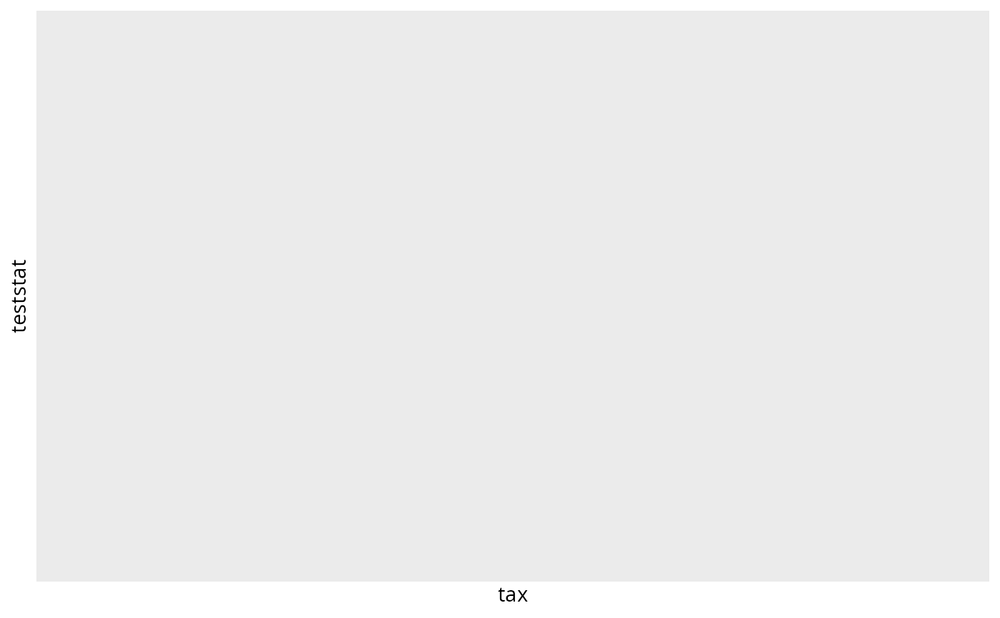

Graphical representation of mt test.
Arguments
- mt
(required) Result of a mt test from the function
phyloseq::mt().- alpha
(default: 0.05) Choose the cut off p-value to plot taxa.
- color_tax
(default: "Class") A taxonomic level to color the points.
- taxa
(default: "Species") The taxonomic level you choose for x-positioning.
Value
a ggplot2 plot of result of a mt test
Examples
# \donttest{
data_fungi_mini2 <- subset_samples(data_fungi_mini, !is.na(Time))
res <- mt(data_fungi_mini2, "Time", method = "fdr", test = "f", B = 300)
#> B=300
#> b=3 b=6 b=9 b=12 b=15 b=18 b=21 b=24 b=27 b=30
#> b=33 b=36 b=39 b=42 b=45 b=48 b=51 b=54 b=57 b=60
#> b=63 b=66 b=69 b=72 b=75 b=78 b=81 b=84 b=87 b=90
#> b=93 b=96 b=99 b=102 b=105 b=108 b=111 b=114 b=117 b=120
#> b=123 b=126 b=129 b=132 b=135 b=138 b=141 b=144 b=147 b=150
#> b=153 b=156 b=159 b=162 b=165 b=168 b=171 b=174 b=177 b=180
#> b=183 b=186 b=189 b=192 b=195 b=198 b=201 b=204 b=207 b=210
#> b=213 b=216 b=219 b=222 b=225 b=228 b=231 b=234 b=237 b=240
#> b=243 b=246 b=249 b=252 b=255 b=258 b=261 b=264 b=267 b=270
#> b=273 b=276 b=279 b=282 b=285 b=288 b=291 b=294 b=297 b=300
#> r=1 r=2 r=3 r=4 r=5 r=6 r=7 r=8 r=9 r=10
#> r=11 r=12 r=13 r=14 r=15 r=16 r=17 r=18 r=19 r=20
#> r=21 r=22 r=23 r=24 r=25 r=26 r=27 r=28 r=29 r=30
#> r=31 r=32 r=33 r=34 r=35 r=36 r=37 r=38 r=39 r=40
#> r=41 r=42 r=43 r=44 r=45
plot_mt(res)
#> Warning: invalid factor level, NA generated

plot_mt(res, taxa = "Genus", color_tax = "Order")
#> Warning: invalid factor level, NA generated
# }